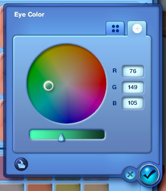
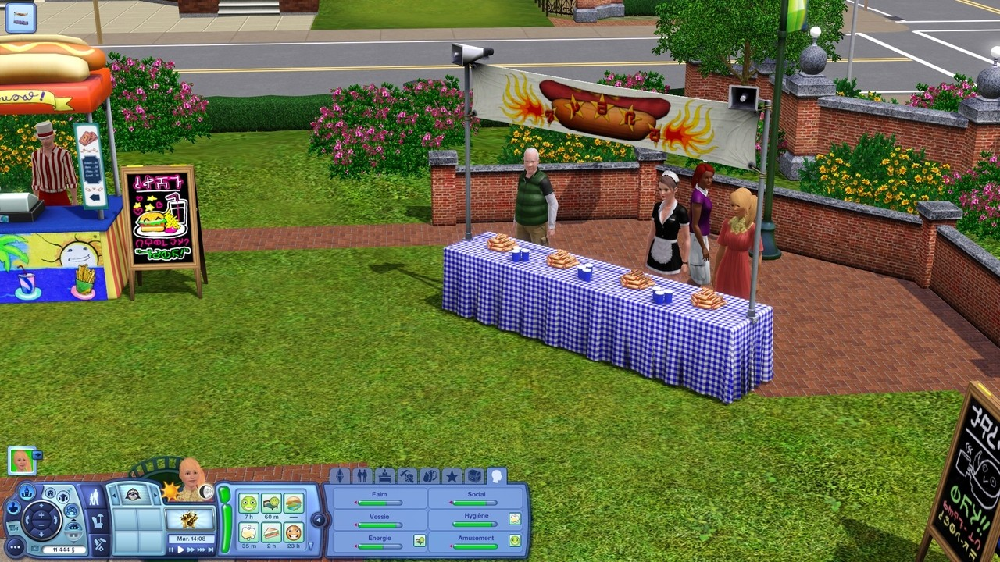
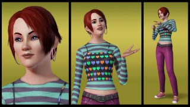
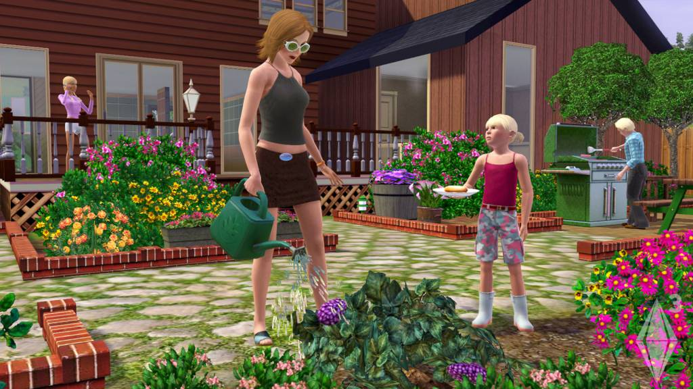
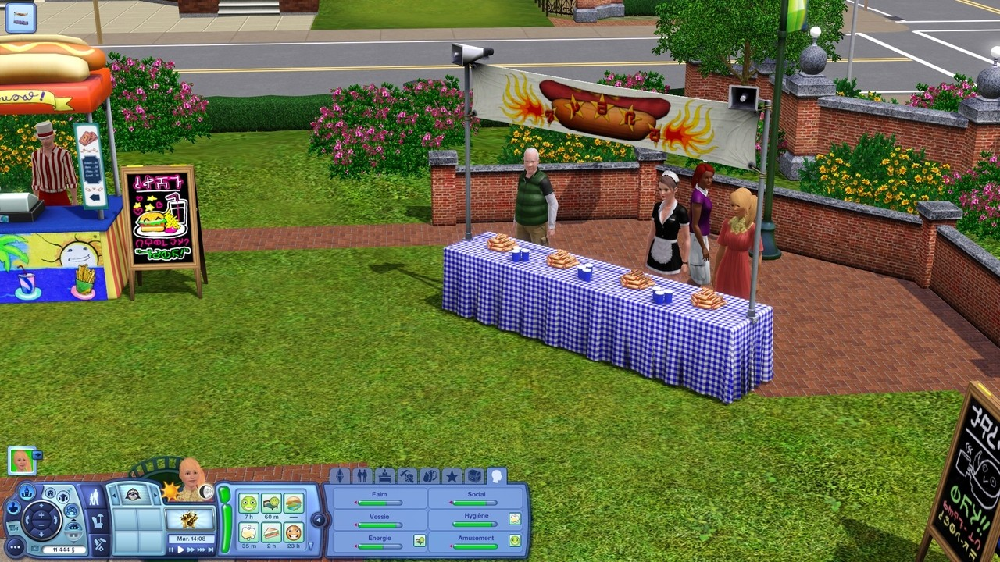
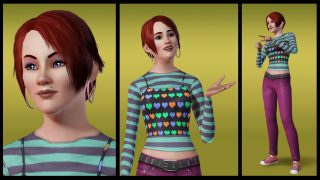
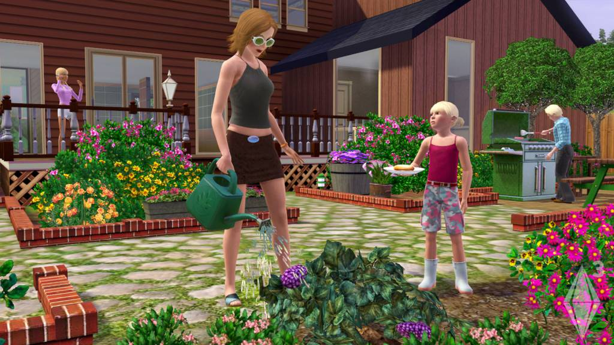

The Sims 3 is my least favorite game of The Sims franchise. One of the main differences between The Sims 2 and The Sims 3 is that The Sims 3 had an open world where your sims could go to the gym or the library without a loading screen in between.
The reason I do not like The Sims 3 is the graphics and the overall art style. The mechanics from The Sims 2 are basically the same, there were some new additions to it like being able to use a color wheel to choose the color of anything in the game from furniture to hair and eye color.
 




